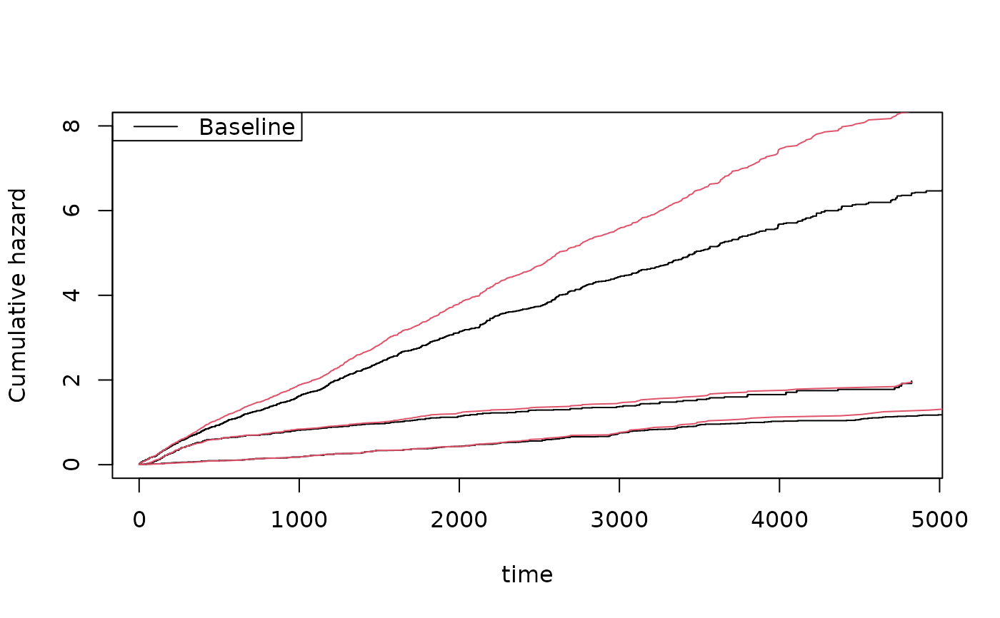

Simulation of recurrent events data based on cumulative hazards: Two-stage model
Source:R/recurrent.marginal.R
simRecurrentTS.RdSimulation of recurrent events data based on cumulative hazards
simRecurrentTS( n, cumhaz, cumhaz2, death.cumhaz = NULL, nu = rep(1, 3), share1 = 0.3, vargamD = 2, vargam12 = 0.5, gap.time = FALSE, max.recurrent = 100, cens = NULL, ... )
Arguments
| n | number of id's |
|---|---|
| cumhaz | cumulative hazard of recurrent events |
| cumhaz2 | cumulative hazard of recurrent events of type 2 |
| death.cumhaz | cumulative hazard of death |
| nu | powers of random effects where nu > -1/shape |
| share1 | how random effect for death splits into two parts |
| vargamD | variance of random effect for death |
| vargam12 | shared random effect for N1 and N2 |
| gap.time | if true simulates gap-times with specified cumulative hazard |
| max.recurrent | limits number recurrent events to 100 |
| cens | rate of censoring exponential distribution |
| ... | Additional arguments to lower level funtions |
Details
Model is constructed such that marginals are on specified form by linear approximations of cumulative hazards that are on a specific form to make them equivalent to marginals after integrating out.
Must give hazard of death and two recurrent events. Possible with two event types and their dependence can be specified but the two recurrent events need to share random effect.
Random effect to death Z.death=(Zd1+Zd2), Z1=(Zd1^nu1) Z12, Z2=(Zd2^nu2) Z12^nu3 $$Z.death=Zd1+Zd2$$ gamma distributions $$Zdj$$ gamma distribution with mean parameters (sharej), vargamD, share2=1-share1 $$Z12$$ gamma distribution with mean 1 and variance vargam12
Examples
######################################## ## getting some rates to mimick ######################################## data(base1cumhaz) data(base4cumhaz) data(drcumhaz) dr <- drcumhaz base1 <- base1cumhaz base4 <- base4cumhaz rr <- simRecurrentTS(1000,base1,base4,death.cumhaz=dr) dtable(rr,~death+status)#> Warning: Using formula(x) is deprecated when x is a character vector of length > 1. #> Consider formula(paste(x, collapse = " ")) instead.#> #> status 0 1 2 #> death #> 0 158 2975 389 #> 1 838 0 0showfitsim(causes=2,rr,dr,base1,base4)